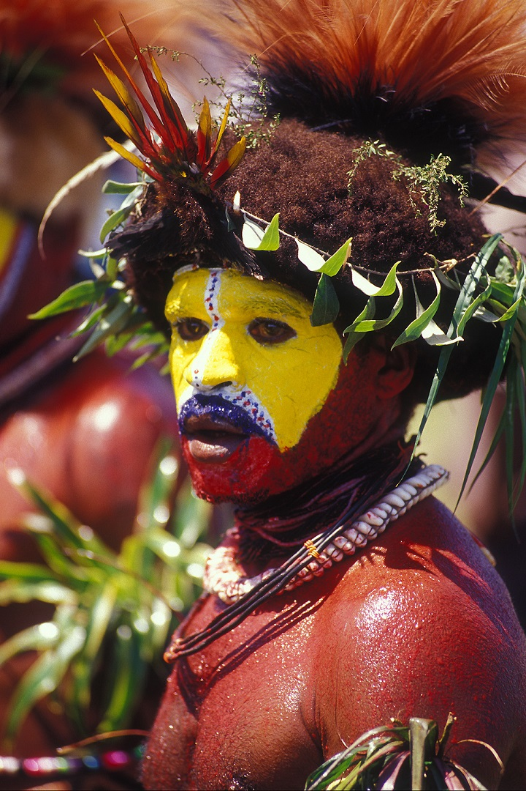
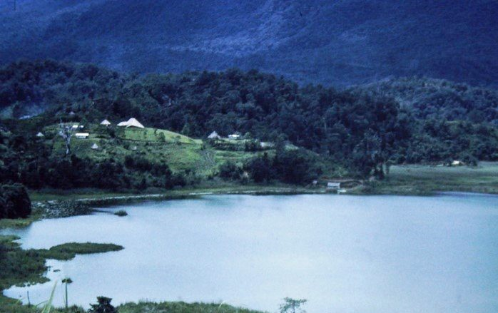

Personal Space or Blog
This page is a personal blog purposely for understanding coding or web page creation.
Hi, My name is Mackay, I am from the upper highlands of Papua New Guinea. I am keen on learning new things. My motto is that together we can achieve great things. I am from Hela, and if you would like to know something about my culture and how we live day by day, then I suggest you read here Culture of the Huli Tribe. I bet you will have some insight into our daily lives.

Figure 1.0 A young (Huli) man in his tradional attire.
MY EDUCATION HISTORY
Table 1.0My education journey so far.
| School | Certificate | Year |
|---|---|---|
| Aiyura National High | Grade 12 | 2021 |
| UPNG | SFY | 2022 |
| UPNG | Bachelor of Scince | 2023 |
I am still trying the to grab the basics of web creation and running it. My interest and hobby are fishing and playing footy, respectively. I could go out in the morning and return in the afternoon just for fishing. I am a outdoor person, spend most of my time in the bush either hunting with my brothers at night or gone night diving. I have visited every districts in Hela. And to be honest, my homeland, Koroba Lake Koiago is peaceful and the most beautiful place you could ever find yourself in.

Figure 1.1 Lake Kopiago
I could remember when I went to Lake Kopiago for the first time. That was when I completed grade 9. It took me almost a day on how master the and ride a conoe. Was an awesome experience for me.